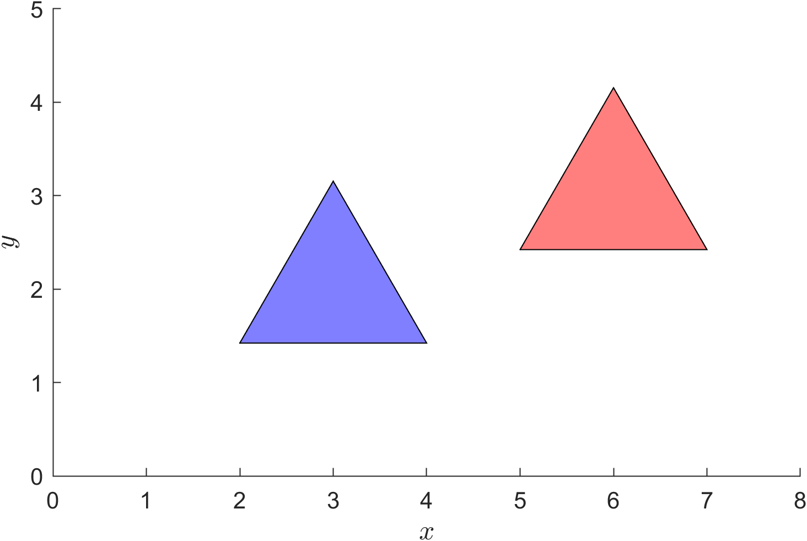
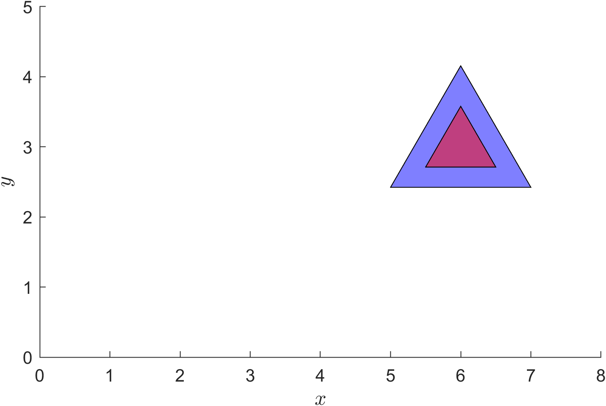
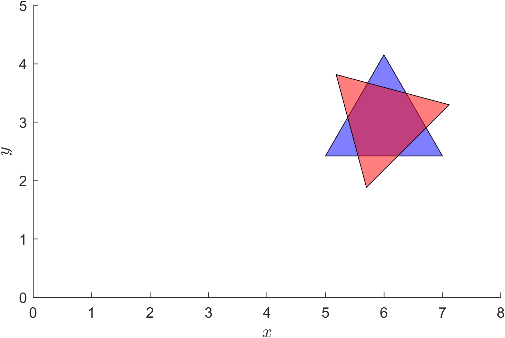

Linear Transformations Exercises
Linear Transformations Exercises#
Exercise 10
A linear transformation \(T: \mathbb{R}^3 \to \mathbb{R}^3\) is defined by \(T(x,y,z) = (x + 2y - z, 3x + z, 2x - y + 3z)\). Determine the transformation matrix for \(T\) and use it to calculate \(T(2, 5, 1)\).
Solution to Exercise 10
therefore the transformation matrix is
Calculating \(T(2, 5, 1)\)
Exercise 11
\(T: \mathbb{R}^3 \to \mathbb{R}^3\) is a linear transformation such that
Find the transformation matrix for \(T\).
Solution to Exercise 11
The transformation matrix is determined using equation (20) which is
The inverse of the right-hand matrix is
so
Checking \(A\)
Exercise 12
An equilateral triangle is defined in \(\mathbb{R}^2\) is centered \((3, 2)\) at the origin with side lengths 2 and with one side parallel to the \(x\)-axis. The triangle is to be translated by the translation vector \(\mathbf{t} = (3, 1)\).
(a) determine the co-ordinates off the three vertices of the triangle before the translation has been applied;
(b) determine the transformation matrix for the translation;
(c) using MATLAB, calculate the vertex co-ordinates of the translated triangle;
(d) plot the pre and post-translated triangle on the same axes.
Solution to Exercise 12
(a) Since the side lengths are 2 then the height of the triangle is \(h = \sqrt{3}\). Let \((x_1,y_1)\), \((x_2,y_2)\) and \((x_3,y_3)\) be the vertex co-ordinates then \(x_1 = 2\), \(x_2 = 4\), \(x_3 = 3\), \(y_2 = y_1\) and \(y_3 = y_1 + h\). The triangle is centred at \((3, 2)\) with a side parallel to the \(x\)-axis so
so the vertex co-ordinates are
(b) \( T \begin{pmatrix} 3 \\ 1 \end{pmatrix} = \begin{pmatrix} 1 & 0 & 3 \\ 0 & 1 & 1 \\ 0 & 0 & 1 \end{pmatrix}\)
(c)
clear
% Define vertex array
P = [ 2, 4, 3 ;
2 - sqrt(3)/3, 2 - sqrt(3)/3, 2 + 2 * sqrt(3)/3 ;
1, 1, 1 ];
% Define translation matrix
T = @(t) [1, 0, t(1) ;
0, 1, t(2) ;
0, 0, 1 ];
% Apply translation
t = [3 ; 1];
P1 = T(t) * P
(d)
figure
patch(P(1,:), P(2,:), 'b', FaceAlpha=0.5)
patch(P1(1,:), P1(2,:), 'r', FaceAlpha=0.5)
axis equal
axis([0, 8, 0, 5])
xlabel('$x$', FontSize=12, Interpreter='latex')
ylabel('$y$', FontSize=12, Interpreter='latex')
{kind=link}

Exercise 13
The translated triangle from Exercise 12 is scaled by a factor of 0.5 in both directions. In MATLAB, calculate the vertex co-ordinates of the scaled triangle and produce a plot showing the pre and post scaled triangle on the same axes.
Solution to Exercise 13
% Calculate centre of the triangle
c = mean(P1, 2);
% Define scaling matrix
S = @(s) [ s(1), 0, 0 ;
0, s(2), 0 ;
0, 0, 1 ];
% Apply transformations (remembering to translate to and from origin)
s = [0.5 ; 0.5];
P2 = T(c) * S(s) * T(-c) * P1;
% Plot pre and post scaled triangle
figure
patch(P1(1,:), P1(2,:), 'b', FaceAlpha=0.5)
patch(P2(1,:), P2(2,:), 'r', FaceAlpha=0.5)
axis equal
axis([0, 8, 0, 5])
xlabel('$x$', FontSize=12, Interpreter='latex')
ylabel('$y$', FontSize=12, Interpreter='latex')
{kind=link}

Exercise 14
The translated triangle from Exercise 12 is rotated by \(\theta=\pi/4\) anti-clockwise about its centre. In MATLAB, calculate the vertex co-ordinates of the rotated triangle and produce a plot showing the pre and post rotated triangle on the same axes.
Solution to Exercise 14
% Calculate centre of the triangle
c = mean(P1, 2);
% Define rotation matrix
R = @(th) [ cos(theta), -sin(theta), 0 ;
sin(theta), cos(theta), 0 ;
0, 0, 1 ];
% Apply transformations (remembering to translate to and from origin)
theta = pi / 4;
P3 = T(c) * R(theta) * T(-c) * P1;
% Plot pre and post scaled triangle
figure
patch(P1(1,:), P1(2,:), 'b', FaceAlpha=0.5)
patch(P3(1,:), P3(2,:), 'r', FaceAlpha=0.5)
axis equal
axis([0, 8, 0, 5])
xlabel('$x$', FontSize=12, Interpreter='latex')
ylabel('$y$', FontSize=12, Interpreter='latex')
{kind=link}

Exercise 15
The MATLAB code below produces a 5 second animation of a point \(\mathbf{p}\) travelling in a circular arc centred at \((10,10)\) with radius 8. The point performs one full rotation per second.
% Define arc parameters
c = [10 ; 10];
r = 8;
% Loop through animation frames
fps = 60;
for t = 0 : 1/fps : 5
% Calculate point position
phi = t * 2 * pi;
p = c + r * [cos(phi) ; sin(phi)];
% Plot point
clf
plot(p(1), p(2), 'bo', MarkerFaceColor='b')
axis equal
axis([0, 20, 0, 20])
title(sprintf('time = %1.2f s', t))
xlabel('$x$', FontSize=12, Interpreter='latex')
ylabel('$y$', FontSize=12, Interpreter='latex')
box on
drawnow
end
Copy this code into a MATLAB live script and edit it so that it does the following:
(a) animate a square with side lengths 1 travelling with a centre at \(\mathbf{p}\). (Hint: define the square vertices so it is centred at the origin);
(b) the square from part (a) is scaled by the scaling vector \(\mathbf{s} = (2+\cos(5t), 2+\cos(5t))\) about its centre;
(c) the square rotates in an clockwise direction about its centre so that the square performs 8 rotations per second.
Solution to Exercise 15
clear
% Define arc parameters
c = [10 ; 10];
r = 8;
% Define square centred at the origin
P = [ -0.5, 0.5, 0.5, -0.5 ;
-0.5, -0.5, 0.5, 0.5 ;
1, 1, 1, 1 ];
% Define transformation matrices
T = @(t) [1, 0, t(1) ;
0, 1, t(2) ;
0, 0, 1 ];
S = @(s) [ s(1), 0, 0 ;
0, s(2), 0 ;
0, 0, 1 ];
R = @(th) [ cos(th), -sin(th), 0 ;
sin(th), cos(th), 0 ;
0, 0, 1 ];
fps = 60;
for t = 0 : 1/fps : 5
% Calculate square centre position
phi = t * 2 * pi;
p = c + r * [cos(phi) ; sin(phi)];
% Transform square
P1 = T(p) * R(-8*t) * S([2+cos(5*t), 2+cos(5*t)]) * P;
% Plot square
clf
patch(P1(1,:), P1(2,:), 'b', FaceAlpha=0.5)
axis equal
axis([0, 20, 0, 20])
title(sprintf('time = %1.2f s', t))
xlabel('$x$', FontSize=12, Interpreter='latex')
ylabel('$y$', FontSize=12, Interpreter='latex')
box on
drawnow
end

Exercise 16
A set of co-ordinates is to be rotated by \(\theta=\pi/6\) anti-clockwise about the line that passes through the point \((2, -4, -3)\) and has the direction vector \((-2, 3, 4)\). Determine the individual transformation matrices used to perform this rotation and write down an expression for calculating a single composite transformation matrix.
Solution to Exercise 16
First translate by \(\mathbf{-p}\) so the translation matrix is
Rotate the direction vector \(\mathbf{d}=(-2,3,4)\) anti-clockwise about the \(z\)-axis by angle \(\phi\) so that it is in the \(xz\) plane. The sine and cosine of \(\phi\) are
so the rotation matrix is
Rotate the direction vector anti-clockwise about the \(y\) axis by angle \(\psi\) so that it points along the \(z\)-axis. The sine and cosine of \(\psi\) are
so the rotation matrix is
Now that the direction vector points along the \(z\)-axis, we perform the rotation by \(\theta=\pi/6\) so the rotation matrix is
The inverse transformations are
and the composite transformation matrix is